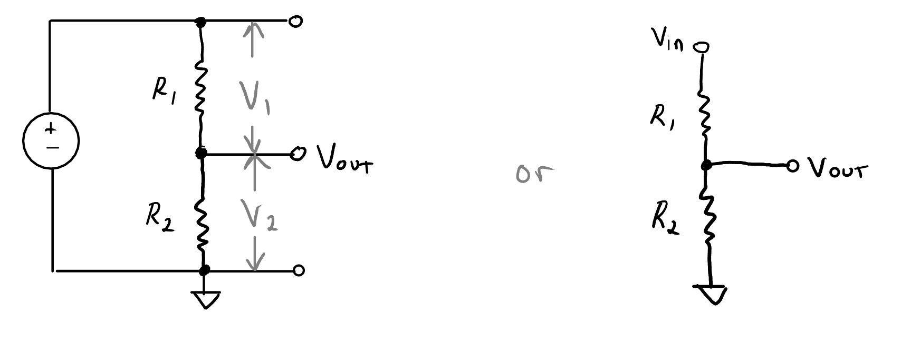

layout: true .footer[ - <div class="tooltip"><a href="/"><i class="fas fa-home"></i></a> <span class="tooltiptext">Go to C454 Main Page</span></div> - <div class="tooltip"><a href="/lectures"><i class="fas fa-chalkboard-teacher"></i></a><span class="tooltiptext">Go to Lecture List</span></div> - <div class="tooltip"><i class="fas fa-question"></i><span class="tooltiptext">Press <kbd>Shift</Kbd> + <kbd>?</kbd> for Navigation Tips!</span></div> ] --- class: center <!-- <h2 style = "text-align: left; font-weight: bold; margin-left: 40px; font-size: 54px; margin-top: 10px;">Environmental applications of ultratrace spectroscopy</h2> --> <!-- <h2 style = "text-align: left; font-weight: bold; margin-left: 40px; font-size: 54px; margin-top: 10px;">Ultratrace Spectroscopy for Environmental Analysis</h2> --> # CHEM 454 # Divider Circuits --- # Series Resistors <center>  </center> .image-credit[Adapted from Practical Electronics for Inventors by Scherz and Monk] --- # Parallel Resistors <center> <img src="./img/intro-to-electronics/current-divider.png", style="margin-top: 50px;"> </center> .image-credit[Adapted from Practical Electronics for Inventors by Scherz and Monk] --- # Practice 1. A Teensy provides 3.3 VDC and a sensor you are connecting can only withstand 1.5 V. Develop a circuit that utilizes the voltage provided by the Teensy to power the sensor using the resistors available in the lab. You should: 1. List the resistances used 2. Include calculations of the voltages at each point in the circuit 3. Measure your circuit when done to verify it performs as expected. <!-- =============================================================================== -->